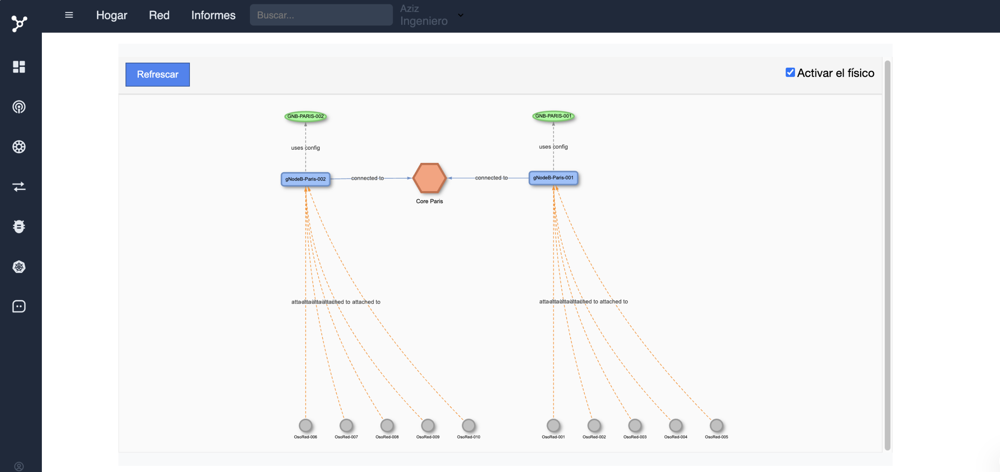
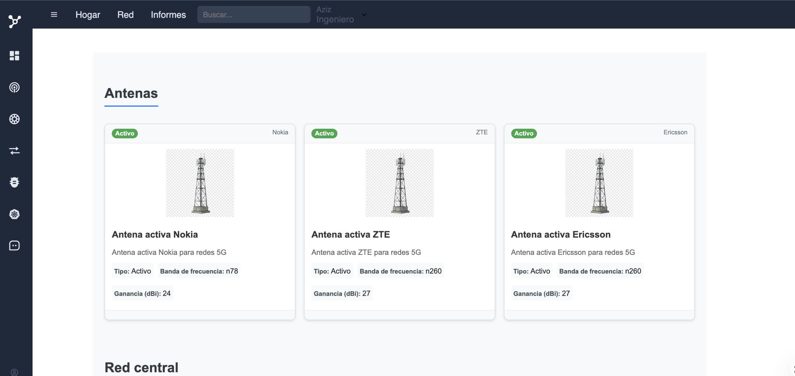

Une architecture 5G où les fonctions réseau elles-mêmes pilotent et sécurisent l'IA
Aujourd'hui, l'IA générative est branchée sur le réseau, en périphérie, comme une application parmi d'autres. Cette architecture propose l'inverse : faire des fonctions réseau du Cœur 5G (AMF, SMF, UPF, NEF, PCF) les briques natives qui exposent, orchestrent et sécurisent un agent IA générative local — pour qu'il tourne à l'intérieur du réseau de l'entreprise, jamais en dehors.
Le problème à résoudre
Brancher un agent IA générative sur un réseau d'entreprise pose trois problèmes qu'on résout aujourd'hui séparément — latence via un cache, sécurité via un VPN, gouvernance via une charte d'usage — sans jamais les traiter comme un seul problème réseau :
- Latence — un agent qui interroge un cloud IA externe hérite de la latence du trajet, incompatible avec des cas d'usage temps réel (contrôle industriel, diagnostic réseau, véhicules).
- Souveraineté de la donnée — les données envoyées à un modèle externe quittent le périmètre de confiance de l'entreprise, avec un risque de fuite, de ré-entraînement non consenti, ou de non-conformité réglementaire.
- Gouvernance des actions IA — un agent qui peut à la fois lire des données sensibles et déclencher des actions a besoin d'un contrôle d'accès aussi strict que celui d'un opérateur humain, pas d'une simple clé API.
L'architecture — l'IA comme fonction réseau à part entière
Plutôt que de traiter l'agent IA comme une application connectée au réseau, cette architecture l'intègre au même niveau que les fonctions réseau du Cœur 5G, chacune héritant d'un rôle précis dans le cycle de vie de l'IA :
NEF — la porte d'entrée contrôlée. Le Network Exposure Function expose au modèle IA uniquement les métriques et événements réseau autorisés (latence, charge, anomalies), sans jamais donner un accès direct et non filtré au Cœur 5G.
PCF — les règles avant l'inférence. Le Policy Control Function applique, avant chaque appel au modèle, les règles de ce que l'agent a le droit de lire et de proposer, selon la slice et le rôle de l'opérateur qui l'a déclenché.
SMF / UPF — la donnée reste locale. Le plan utilisateur (UPF) et la gestion de session (SMF) garantissent que les flux de données alimentant l'inférence restent confinés à la slice dédiée à l'IA — aucune donnée d'inférence ne transite par une passerelle Internet publique.
AMF — l'identité avant tout. Toute requête vers l'agent IA, humaine ou automatisée, est d'abord authentifiée et enregistrée comme le serait un équipement (UE) qui rejoint le réseau.
RBAC — l'agent propose, l'humain dispose. Les recommandations de l'agent IA (diagnostic, score de santé réseau, correctifs) passent par le même filtre de rôle que les actions humaines : aucune action réseau n'est exécutée automatiquement sans autorisation explicite.
Chiffrement de bout en bout. TLS / AES-256 protège les échanges entre chaque fonction réseau et le runtime d'inférence local, du capteur jusqu'à la réponse de l'agent.
Démonstration — la plateforme qui porte cette architecture
Capture de l'interface connectée à un cœur 5G réel (srsRAN + Open5GS), qui sert aujourd'hui de socle à cette approche.


Schéma — l'IA intégrée aux fonctions du Cœur 5G
Sécurité & gouvernance de la donnée
Confinement par slice. Le Network Slicing (eMBB, URLLC, mMTC) isole le trafic d'inférence IA dans une tranche dédiée, avec bande passante et latence réservées, séparée du trafic utilisateur classique.
Traçabilité complète. Chaque lecture de donnée par l'agent et chaque action proposée sont journalisées, avec le rôle de l'opérateur ayant validé — ou refusé — la recommandation.
Chiffrement bout en bout. TLS / AES-256 sur l'ensemble des échanges entre fonctions réseau, moteur d'inférence et interface de supervision.
Aucune donnée ne sort. Le modèle raisonne sur les métriques exposées par NEF, hébergées et traitées sur l'infrastructure de l'entreprise — pas de dépendance à un cloud IA tiers pour l'inférence critique.
Où en est le projet
- Interface de supervision 5G (Angular / Node.js) validée sur un testbed réel srsRAN + Open5GS.
- Agent IA (Groq / Llama 4) déjà connecté à Grafana / Prometheus, calculant un score de santé réseau (0–100) — cas validé : 55 % → 60 % après correction d'un déséquilibre de bande passante entre slices eMBB et URLLC.
- RBAC opérationnel sur l'ensemble des actions réseau, humaines comme IA.
- Prochaine étape : exposer le modèle via NEF comme fonction réseau native, avec filtrage PCF en amont de chaque appel — objet de ce pitch.
Envie d'en discuter ?
Je peux détailler comment chaque fonction réseau du Cœur 5G s'articule avec l'agent IA, les choix de sécurité, ou la feuille de route vers une exposition native via NEF.
Envoyer un email- Emailbritelyassine47@gmail.com
- GitHubbritek2001
- Dépôt du projet5GOSS (privé) ↗
- Portfolio completbritek2001.github.io/Med-Britel.github.io ↗